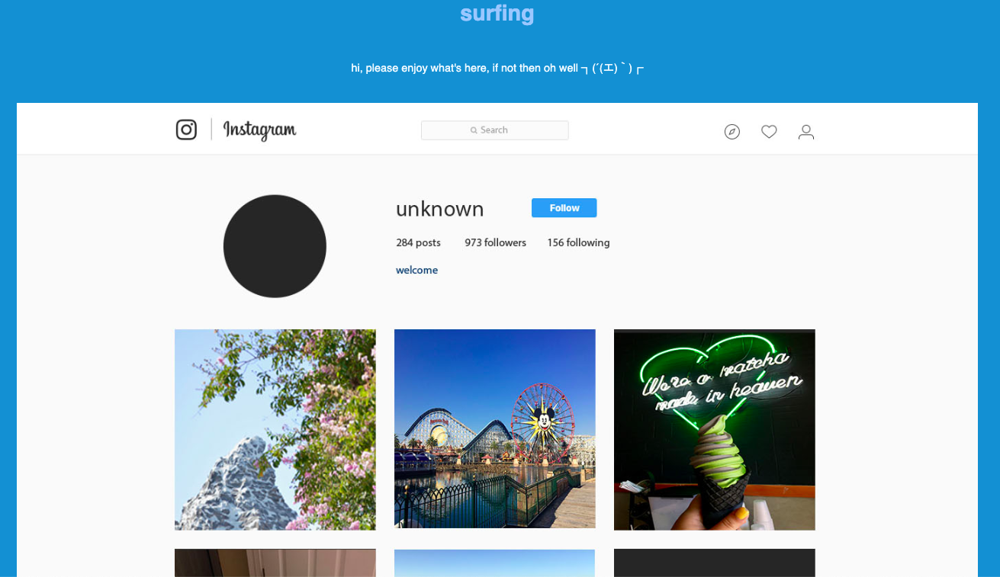

Student life of trying to balance homework, eating, and boredom at the same time, but boredom takes over.
Dogs are ususally seen as a man's best friend. I wanted to show the perspective of a girl and her dog and the interactions between them
Flowers are used for different occasions, and I wanted to show how they're used in different ways.
This interactive piece is similar to a walkthrough of how social media plays a role in our lives. We scroll and click through the things we wish to see, but don't intially think about what could happen if there just so happens to be a bug in the system.